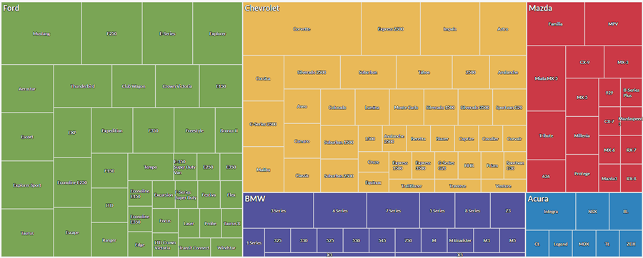

Principios de diseño en visualización
IIC2026
Principios de efectividad
Principios de diseño en visualización
IIC2026
Principio de efectividad
La importancia de un atributo debe corresponder a la prominencia del canal utilizado, es decir, cuan perceptible es.
Ranking de canales

(Fuente: Libro "Visualization, Analysis and Design" )
No al 3D injustificado


(Fuente imagen 1: enlace)
(Fuente imagen 2: WTF Viz)
3D está bajo en el ranking de canales
(Fuente: Libro "Visualization, Analysis and Design" )
3D produce oclusión
(Fuente: Libro "Visualization, Analysis and Design" )
3D trae distorción de perspectiva
(Fuente: Libro "Visualization, Analysis and Design" )
3D no es malo siempre
(Fuente: Libro "Visualization, Analysis and Design" )
Lograrlo en blanco y negro (Get it right in black and white)


Fuente imagen original: enlace